Removal and Replacement
Removal
CAUTION:
- Use fender covers to avoid damaging painted surfaces.
- To avoid damage, unplug the wiring connectors carefully while holding the connector portion.
NOTE:
- Mark all wiring and hoses to avoid misconnection.
- To release the fuel system pressure before removing the engine assembly, start the engine with the fuel pump relay removed. And then turn off the ignition switch after engine stops.
1. Remove the engine cover (A).
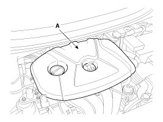
2. Disconnect the battery terminals (A). The negative terminal first.
Tightening torque
(+) terminal: 7.8 - 9.8 N.m (0.8 - 1.0 kgf.m, 5.8 - 7.2 lb-ft)
(-) terminal: 4.0 - 6.0 N.m (0.4 - 0.6 kgf.m, 3.0 - 4.4 lb-ft)
3. Remove the air cleaner assembly.
(1) Remove the air duct (B).
(2) Disconnect the breather hose ( C).
(3) Disconnect the air intake hose (D) and then remove the air cleaner assembly (E).
Tightening torque
Hose clamp bolt:
2.9 - 4.9 N.m (0.3 - 0.5 kgf.m, 2.2 - 3.6 lb-ft)
Air cleaner assembly bolts:
3.9 - 5.9 N.m (0.4 - 0.6 kgf.m, 2.9 - 4.3 lb-ft)
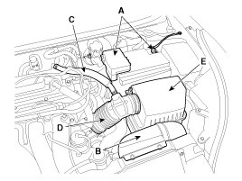
NOTE:
Install the air intake hose while the plate of the hose clamp must be in line with the stopper of the hose.
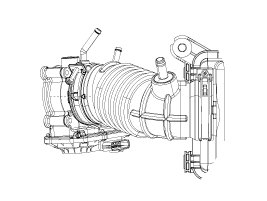
4. Remove the battery (A) after removing the mounting bracket (B).
Tightening torque:
8.8 - 13.7 N.m (0.9 - 1.4 kgf.m, 6.5 - 10.1 lb-ft)
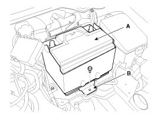
5. Disconnect the ECM connectors (A) and remove the ECM (B).
Tightening torque:
9.8 - 11.8 N.m (1.0 - 1.2 kgf.m, 7.2 - 8.7 lb-ft)
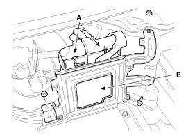
6. Loosen the battery "+" cable bracket mounting bolt (A) and then remove the battery tray (B).
Tightening torque:
8.8 - 13.7 N.m (0.9 - 1.4 kgf.m, 6.5 - 10.1 lb-ft)
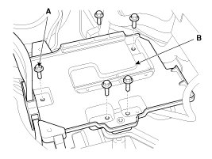
7. Remove the under covers (A).
Tightening torque:
7.8 - 11.8 N.m (0.7 - 1.1 kgf.m, 5.8 - 8.7 lb-ft)
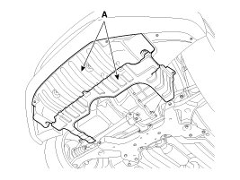
8. Loosen the drain plug, and drain the engine coolant. Remove the radiator cap to help drain the coolant faster.
9. Disconnect the radiator upper hose (A).

10. Disconnect the radiator lower hose (A).
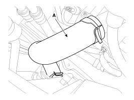
NOTE:
When installing radiator hoses, install as shown in illustrations.
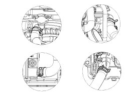
11. Recover the refrigerant and then remove the high pressure pipe (A) and the low pressure pipe (B).
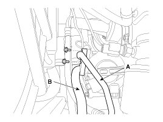
12. Remove the transaxle wire harness connectors, control cable and hoses from the transaxle. .
13. Disconnect the brake booster vacuum hose (A) and the heater hoses (B).

NOTE:
When installing the heater hoses, install as shown in illustrations.

14. Disconnect the fuel hose (A) and the PCSV (Purge control solenoid valve) hose (B).

15. Disconnect the "+" cable (A), the fuse box connector (B) and the EMS block (C) from the fuse/relay box and then remove the wiring protector after disconnecting the ground lines (D).
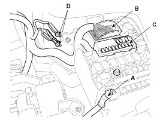
16. Disconnect the front oxygen sensor connector (A) and then remove it from the bracket. (ULEV only)

17. Remove the front muffler ( A).
Tightening torque:
39.2 - 58.8 N.m (4.0 - 6.0 kgf.m, 28.9 - 43.4 lb-ft)
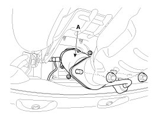
CAUTION:
Disconnect 2 oxygen sensor wiring clips (A) from under body before removing the front muffler.
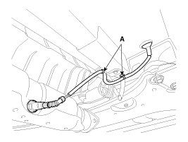
18. Remove the steering u-joint mounting bolt (A).
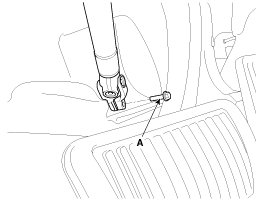
19. Remove the steering u-joint mounting bolt (A).
20. Remove the lower arms (A).
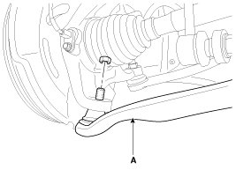
21. Remove the stabilizer bar links (A).
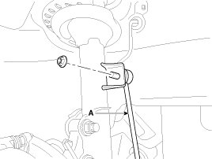
22. Remove the tie rod ends (A).
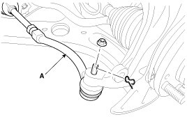
23. Disconnect the drive shafts (A) from the axle hubs.

24. Remove the roll rod bracket (A).
Tightening torque
Nut (B):
107.9 - 127.5 N.m (11.0 - 13.0 kgf.m, 79.6 - 94.0 lb-ft)
Bolt (C):
49.0 - 63.7 N.m (5.0 - 6.5 kgf.m, 36.2 - 47.0 lb-ft)
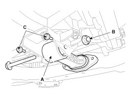
25. Remove the roll rod mounting support bracket (A).
Tightening torque:
44.1 - 39.2 N.m (4.5 - 6.0 kgf.m, 32.5 - 43.4 lb-ft)
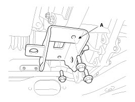
26. Support the sub frame (A) with a floor jack, and then remove the sub frame mounting bolts and nuts.
Tightening torque
Sub frame mounting bolts & nuts:
156.9 - 176.5 N.m (16.0 - 18.0 kgf.m, 115.7 - 130.2 lb-ft)
Stay mounting bolts:
44.1 - 53.9 N.m (4.5 - 5.5 kgf.m, 32.5 - 39.8 lb-ft)
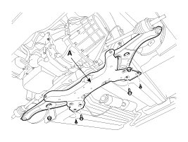
CAUTION:
- After removing the sub frame mounting bolts and nuts, the engine and transaxle assembly may fall down, so support them securely with floor jack.
- Verify that the hoses and connectors are disconnected before removing the engine and transaxle assembly.
27. Disconnect the ground line (A), and then remove the engine mounting support bracket (B).
Tightening torque
Ground line bolt (A):
10.8 - 13.7 N.m (1.1 - 1.4 kgf.m, 8.0 - 10.1 lb-ft)
Nut (C):
63.7 - 83.4 N.m (6.5 - 8.5 kgf.m, 47.0 - 61.5 lb-ft)
Bolt (D) and nuts (E):
49.0 - 63.7 N.m (5.0 - 6.5 kgf.m, 36.2 - 47.0 lb-ft)
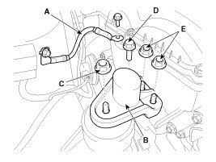
28. Disconnect the ground line (A), and then slowly loosen the transaxle mounting bolts (B).
Tightening torque:
88.3 - 107.9 N.m (9.0 - 11.0 kgf.m, 65.1 - 79.6 lb-ft)
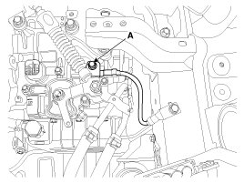
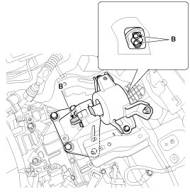
29. Lower the engine and transaxle assembly using a floor jack and then remove the engine and transaxle assembly by lifting vehicle.
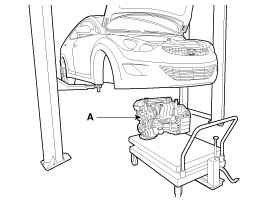
CAUTION:
When remove the engine and transaxle assembly, be careful not to damage any surrounding parts or body components.
Installation
Installation is in the reverse order of removal.
NOTE:
Perform the following:
- Adjust a shift cable.
- Refill engine with engine oil.
- Refill a transaxle with fluid.
- Refill a radiator and a reservoir tank with engine coolant.
- Clean battery posts and cable terminals and assemble.
- Inspect for fuel leakage.
- After assembling the fuel line, turn on the ignition switch (do not operate the starter) so that the fuel pump runs for approximately two seconds and fuel line pressurizes.
- Repeat this operation two or three times, then check for fuel leakage at any point in the fuel line.
- Bleed air from the cooling system.
- Start engine and let it run until it warms up (until the radiator fan operates 3 or 4 times).
- Turn off the engine. Check the level in the radiator, add coolant if needed. This will allow trapped air to be removed from the cooling system.
- Put radiator cap on tightly, then run the engine again and check for leaks.